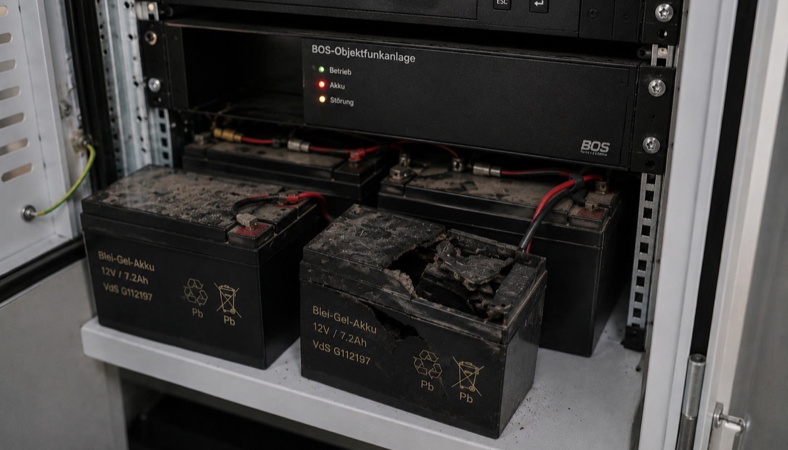

Der Feuerwehreinsatz beginnt. Das Gebäude ist verraucht, die Sicht gegen null. Die Einsatzkräfte im Treppenhaus rufen Verstärkung – und bekommen keine Antwort. Das Stromnetz ist ausgefallen. Der Repeater der BOS-Anlage schweigt. Der Akku, der jetzt 30 Minuten Überbrückung leisten soll, gibt nach 4 Minuten auf.
Dieser Ausfall ist nicht fiktiv. Er ist das wahrscheinliche Ergebnis einer BOS-Anlage, deren Pufferbatterie seit Jahren nicht unter Lastbedingung getestet wurde – und bei jeder Routineinspektion mit "Spannung OK" im Protokoll stand. Das Tückische an Blei-Gel-Akkus: Sie lügen. Im Ruhezustand zeigen sie volle Spannung. Unter Last brechen sie ein.

Wie Blei-Gel-Akkus wirklich altern
Die Pufferbatterien in BOS-Anlagen sind fast ausschließlich Blei-Gel-Akkus (VRLA). Sie haben gegenüber herkömmlichen Blei-Säure-Akkus den Vorteil, wartungsfrei und dicht zu sein. Aber sie haben eine entscheidende Schwäche: Sie altern von innen, ohne es zu zeigen.
Die drei Phasen des Akkulebens
| Phase | Alter | Ruhespannung | Kapazität unter Last |
|---|---|---|---|
| Neue Batterie | 0–2 Jahre | 13,6 V ✅ | 100% ✅ |
| Alterungsphase | 2–4 Jahre | 13,4 V ✅ | 60–80% ⚠️ |
| Kritische Phase | 4–6 Jahre | 13,2 V ✅ | 20–40% ❌ |
| Ausfall-Phase | 6+ Jahre | 13,0 V scheinbar OK | unter 10% – sofortiger Einbruch |
Ein Akku in der Ausfall-Phase zeigt im Leerlauf noch fast volle Spannung. Unter dem Strom des Repeaters bricht die Spannung innerhalb von Minuten auf unter 10 V ein – der Repeater schaltet ab. Wer nur die Ruhespannung misst, sieht das nicht.
Was DIN 14024 für den Akkutest konkret fordert
Die DIN 14024 ist eindeutig: Die Notstromversorgung muss bei Netzausfall einen Betrieb der Anlage für mindestens 30 Minuten sicherstellen. Die Prüfpflicht ergibt sich daraus zwingend:
- Der Akkutest muss unter Betriebslast des Repeaters durchgeführt werden
- Die gemessene Kapazität muss im Prüfprotokoll dokumentiert werden
- Bei Unterschreiten der Mindestkapazität ist ein Tausch zu empfehlen oder anzuordnen
- Das Testergebnis fließt in die Bewertung der Gesamtanlagentauglichkeit ein
Eine Ruhespannungsmessung ohne Lasttest erfüllt diese Anforderung nicht. Wer einen Wartungsvertrag mit einem Anbieter hat, der nur die Spannung nachmisst und keinen Lasttest durchführt, hat kein normkonformes Wartungsprotokoll – auch wenn das Protokoll das nicht explizit sagt.
Wann muss ein Akku getauscht werden?
Als Faustregel gilt: Blei-Gel-Akkus in BOS-Anlagen sollten alle 4 Jahre getauscht werden – unabhängig von der gemessenen Kapazität. Das klingt konservativ, aber der Grund ist pragmatisch: Ein Akku, der 4 Jahre in einem warmen Technikraum gestanden hat, ist statistisch in der Risikozone.
Diese Faktoren beschleunigen die Alterung zusätzlich:
- Hohe Umgebungstemperatur: Jede 10°C über 20°C halbiert die Lebenserwartung des Akkus. In schlecht belüfteten Technikräumen mit 30°C+ kann die effektive Lebensdauer auf 2 Jahre sinken.
- Tiefentladungen: Jeder Netzausfall, bei dem der Akku tief entladen wurde, reduziert die Restkapazität dauerhaft.
- Erhaltungsladung außerhalb des Toleranzbereichs: Zu hohe oder zu niedrige Erhaltungsladespannung schädigt die Zellenstruktur über Zeit.
- Erschütterungen: In Gebäuden mit schwerem Maschinenbetrieb können Vibrationen die Plattenstruktur beschädigen.
Anzeichen, dass Ihre Batterie ersetzt werden sollte
Auch wenn Akkus still sterben – es gibt Warnsignale, auf die Betreiber und Hausmeister achten sollten:
- 🔴 Alarm-LED am Repeater leuchtet dauerhaft – oft ein Ladekreis-Fehler, kann auf Akkuproblem hinweisen
- 🔴 Aufgeblähtes Akkugehäuse – Gasentwicklung im Inneren, sofortiger Tausch erforderlich
- 🔴 Geruch nach verbranntem Kunststoff in der Nähe des Repeaters
- 🔴 Kondensation oder Belag auf oder um den Akku
- 🟡 Ungewöhnlich kurze Überbrückungszeit bei einem der seltenen Netzausfälle
- 🟡 Ladezeit deutlich länger als beim letzten Wartungsbesuch
Wenn eines dieser Signale auftritt: Rufen Sie sofort an. Ein aufgeblähter Blei-Gel-Akku kann im Extremfall auslaufen oder eine Wärmeentwicklung verursachen.
Wie BESCom Akkus testet und schützt
BESCom führt bei jeder Wartung einen vollständigen Lasttest durch – nicht nur Ruhespannungsmessung. Das bedeutet konkret:
- Trennen vom Netz – Simulation des Netzausfalls
- Betrieb unter Volllast des Repeaters für 30 Minuten
- Messung der Entladekurve – Spannung nach 5, 15, 30 Minuten dokumentiert
- Kapazitätsbewertung – Vergleich mit Herstellerwert und Norm
- Empfehlung oder Direktaustausch bei Unterschreiten des Schwellwerts
- Vollständige Dokumentation im Wartungsprotokoll mit Messwerten
Mit diesem Verfahren können wir garantieren, dass Ihre BOS-Anlage im Ernstfall auch wirklich 30 Minuten durchhält – nicht nur auf dem Papier.
💡 Unser Angebot: Sie wissen nicht, wie alt der Akku Ihrer BOS-Anlage ist? Wir kommen vorbei, führen einen Lasttest durch und geben Ihnen eine ehrliche Bewertung – ohne dass Sie gleich einen Wartungsvertrag abschließen müssen.
→ Kostenlosen Akkutest anfragen
Fazit: Der Akku ist das schwächste Glied – testen Sie ihn richtig
Eine BOS-Anlage, deren Akku unter Last versagt, ist keine BOS-Anlage – sie ist Dekoration. Im einzigen Moment, in dem es auf sie ankommt, versagt sie. Das Erschreckende: Ohne Lasttest weiß niemand, in welchem Zustand der Akku wirklich ist.
Sorgen Sie dafür, dass Ihr Wartungspartner echte Lasttests durchführt und die Messwerte dokumentiert. Das ist der Unterschied zwischen einer rechtssicheren Wartung und einem Protokoll, das im Ernstfall nichts wert ist.
BESCom führt einen vollständigen Lasttest durch und gibt Ihnen ein ehrliches Bild des tatsächlichen Zustands – mit normkonformem Protokoll.